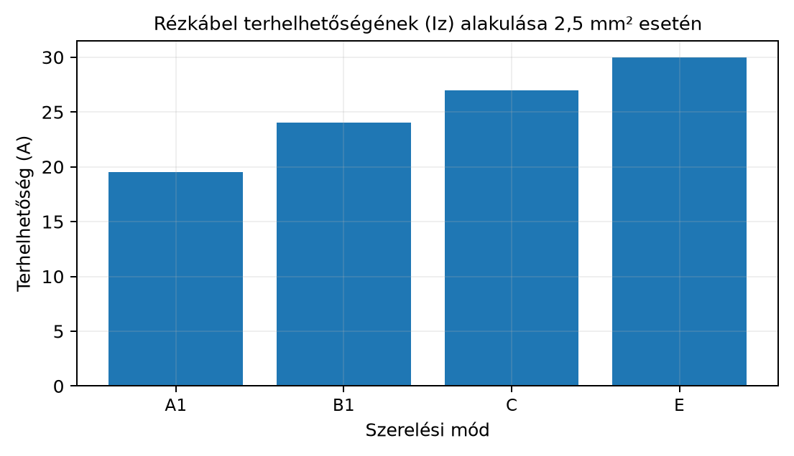

Egy felújítás során a régi kötési képet látod a lakáselosztóban: piros, zöld, fekete, kék vezetékek keverednek, a védőcsőben melegszik a kábel. Ha itt a megszokott rutin szerint kötöd be az új szerelvényeket, könnyen fázist teszel a nullára, vagy ami rosszabb, a testelésre. A helytelen színválasztás vagy a szerelési mód figyelmen kívül hagyása nemcsak működési zavart, hanem közvetlen érintésvédelmi hibát és tűzveszélyt is okozhat. Ebben az alfejezetben azt tanulod meg, hogyan azonosítsd egyértelműen a vezetőket, milyen szabványos keresztmetszetek közül választhatsz, és miért nem mindegy, hogy egy kábelt falba vésve, tálcán vagy a földben vezetsz.
Mit látsz, ha megbontasz egy korszerű, ötvezetős lakáskábelt? Barna, fekete, szürke eret, egy világoskéket és egy zöld-sárgát. Ez a színkód a hibavédelem és a szerelhetőség alapja: a szerelőnek messziről, rajz nélkül is tudnia kell, melyik ér lehet feszültség alatt, és melyikhez tilos hozzányúlnia feszültségmentesítés előtt.
Szabvány. A vezetők színjelölését Magyarországon az MSZ EN 60445 (az ember–gép kapcsolat, a jelölés és az azonosítás alapelvei; a berendezések kapcsainak, a vezetékvégeknek és a vezetőknek az azonosítása; ellenőrizendő: pontos cím és kiadás) írja elő. (Régi dokumentumokban a kábelerek színeire a HD 308 hivatkozást is megtalálod; ezt az EN 60445 váltotta fel, a HD 308 már nem hatályos.) A pontos, hatályos kiadás évszámát mindig ellenőrizd a munkavégzés helyén. A szabvány a következő egyértelmű hozzárendelést rögzíti:
| Vezető szerepe | Előírt szín |
|---|---|
| Védővezető (PE) | Kizárólag zöld-sárga |
| Nulla- vagy középvezető (N) | Kizárólag világoskék |
| Fázisvezető (L1, L2, L3) | Barna, fekete, szürke |
| Védő- és nullavezető egyesítve (PEN) | Zöld-sárga, a végein világoskék jelöléssel |
Szabály. A zöld-sárga szín kizárólag védővezető (PE vagy PEN) céljára használható. A világoskék szín elsősorban a nullavezetőé, de ha az áramkörben nincs nullavezető, akkor fázisvezetőként is használható. A gyakorlatban azonban ez kerülendő, mert egy későbbi bővítésnél félreértést okoz. A barna, fekete, szürke csak fázisvezetőt jelölhet.
Továbbvitt eredmény. A fenti színkódot fogod használni minden kapcsolási és huzalozási rajzon, a Vezetékek és kábelek szerelési módjai fejezet gyakorlati útmutatójában, valamint a Munkahely, szerszám, vezetékmegmunkálás, érvéghüvely és kábelsaru műveleteinél is. Ha itt téveszted el, ott hibás munkát fogsz végezni.
A vezetékkeresztmetszetet négyzetmilliméterben () adjuk meg. Az érték a vezető anyagának (réz vagy alumínium) tényleges felületét jelenti, nem az átmérőt. A kereskedelemben a villanyszerelők gyakran mondják: „egyötös rezet”, ami -t jelent. Az európai és hazai gyakorlatban a harmonizált (H) kábeleknél az alábbi szabványos keresztmetszetsor (MSZ EN 60228) szerint választunk:
A lakásvillamosságban leggyakrabban , , , és keresztmetszetekkel dolgozunk. Ipari elosztóknál a – tartomány a jellemző. A katalógusokban ez a sor folytatódik , , fölé is, de az már egy másik szerelési világ.
Definíció. A tömör vezető egyetlen huzalból áll. A sodrott vezető több, egymás köré csavart huzalból áll. A hajlékony vezető nagyon sok vékony, finomsodratú szálból áll, ezért jól hajlítható. A vezető hajlékonysági osztályát a szabvány 1, 2, 5, 6 osztályokba sorolja. A merev, tömör vezető jellemzően 1-es osztályú, a hajlékony finomsodratú 5-ös.
A választás szempontja mindig a mechanikai igénybevétel és a csatlakoztatás módja. A rögzített, álmennyezetben vagy védőcsőben vezetett áramkörhöz használhatsz tömör vagy -t. A mozgó, rezgésnek kitett gépekhez, hajlékony kábelekhez viszont csak finomsodratú vezető szabad. A tömör vezetőt ne használd olyan helyen, ahol a vezetéket mozgatják vagy rezgés éri.
Gyakorlat. A kéziszerszámos dobozban lévő hajlékony kábeleknél mindig figyeld a jelölést: például a H05VV-F 3G1,5 megjelölésben a 3 az erek számát, a G azt jelzi, hogy az egyik ér zöld-sárga (védővezető), az 1,5 a keresztmetszet mm²-ben. A tömör kábelnél például H07V-U 1,5 jelölést látsz. A betűkódos jelölésrendszert a Vezeték- és kábeltípusok, jelölésrendszer alfejezetben tanultad.
Az áramkörök kivitelezésekor nem csak az a kérdés, milyen vastag a vezető. Legalább ilyen fontos, hogy hová kerül. Ugyanaz a -es rézvezeték teljesen másképp melegszik, ha szabad levegőn, szerelőtálcán fut, vagy ha süllyesztve, hőszigetelésben, védőcsőben van. A melegedés oka egyszerű: amikor áram folyik rajta, a vezető ellenállása miatt villamos teljesítmény alakul át hővé, a összefüggés szerint. Ez a hő csak akkor távozik el, ha a környező anyag (levegő, fal, föld) jól elvezeti. Ha a kábel hőszigetelő rétegbe kerül, a hő ottreked, a szigetelés megolvadhat, a kábel tönkremehet, vagy tüzet okozhat.
A terhelhetőségi táblázatok használatához a szabvány az elhelyezést szerelési módokkal jelöli. Így válik a táblázat egyetemessé, és így lehet ugyanazt a számítást a francia, a magyar vagy a szlovák kivitelezőnek megismételni.
Szabvány. Az MSZ HD 60364-5-52 (Kisfeszültségű villamos berendezések – 52. rész: Szerelési módok és terhelhetőség) a szerelési módokat betűkkel és számokkal jelöli. A pontosan hatályos táblázatértéket mindig ellenőrizd a szabvány legfrissebb kiadásában (ellenőrizendő: aktuális terhelhetőségi táblázat). A leggyakoribb csoportok:
A betűjelek hozzárendelését a szabvány A.52.3 táblázata adja (ellenőrizendő: MSZ HD 60364-5-52, aktuális kiadás). A hazai gyakorlat két leggyakoribb esete: védőcsőbe húzott H07V-U vakolat alatt vagy falazatban → B1 (2,5 mm²: kb. 24 A); köpenyes kábel (pl. NYM-J) közvetlenül vakolat alatt → C (kb. 27 A); hőszigetelt (pl. gipszkarton és kőzetgyapot) falban csőben → A1 (kb. 19,5 A). A konkrét betűjelet mindig a tényleges beépítésből határozd meg, nem a „falba vésés” szóból (ellenőrizendő: MSZ HD 60364-5-52).
Az alábbi ábra azt mutatja meg, hogy ugyanaz a keresztmetszet mennyit bír el a különböző csoportokban. Az értékek szemléltető példák, a pontos értékek a szabványi táblázattól és a környezeti hőmérséklettől függenek:

Látod, miért nem mindegy, hová teszed a vezetéket? Ugyanaz a -es rézvezeték hőszigetelő falban, védőcsőben (A1) kb. -t, szabad levegőn (E) kb. -t visel el; a vakolat alatti szerelés ezek között van: csőben (B1) kb. , köpenyes kábellel közvetlenül (C) kb. (két terhelt ér, PVC, réz, ; ellenőrizendő). Ha tehát a tervező kiszámolta, hogy kell, de a szerelő a falba vésve vezeti, miközben a terv szabad levegőn, tálcán való szerelést ír elő, a kábel túlmelegedhet.
Megjegyzés. Az oszlopdiagram értékei nem a szabvány hivatalos táblázatát helyettesítik, hanem a hőelvezetés különbségét szemléltetik. Ez a látvány segít megjegyezni, hogy a rosszabb hőelvezetésű szerelési mód (pl. hőszigetelő falban, védőcsőben) kisebb terhelhetőséget ad.
Cél: Ismerd fel és ellenőrizd a kábel ereit, ne bízz vakon a színben. Eszközök és anyagok: tömör rézkábel (NYM-J 5x2,5 jellegű), kétpólusú feszültségvizsgáló (az öt szabály 3. lépéséhez; a fázisceruza a feszültségmentesség megállapítására nem megbízható), multiméter CAT III/IV-es mérőzsinórral, szerelőolló, kés.
Biztonsági korlát. A feladat tanműhelyi környezetre vagy jogosult oktató felügyeletére vonatkozik; hálózati feszültségen önállóan ne végezd.
Tipikus hibák: A zöld-sárga vezeték túl rövidre vágása, a kék keresztmetszetének kisebbre választása, a szerelőollóval a külső köpeny alatt a belső erek megsértése.
Tünet: Egy felújításnál a lakáselosztó bővítésekor a szerelő a meglévő köröknél azt találja, hogy a kör fogyasztói nem működnek; a mérés (kétpólusú feszültségvizsgálóval, műszerellenőrzés után): a barna és a kék ér között 0 V, a zöld-sárga és a kék ér között viszont 230 V van.
Figyelem. Ha a védővezetőn feszültséget mérsz, azonnal kapcsold le az érintett kört (szükség esetén a főkapcsolót), és a hiba megszüntetéséig ne helyezd vissza feszültség alá: minden védővezetős készülékház életveszélyes lehet. A területet biztosítsd, a lakókat értesítsd.
Hipotézis: A régi szerelésben a vezetékek nem a mai színkód szerint vannak színezve (a régi szerelésekben a mai színkódtól eltérő színek fordulnak elő – ellenőrizendő: régi MSZ színjelölés), vagy a kábelt toldották, és a toldásnál felcserélődtek az erek.
Mérés és azonosítás: a tünetként mért feszültség (kétpólusú feszültségvizsgálóval, műszerellenőrzés után) azt mutatja, hogy a zöld-sárga ér fázispotenciálon, a barna nullapotenciálon van: , . Ezután a kört lekapcsolod, az öt szabály szerint feszültségmentesíted, és az ereket folytonosságméréssel azonosítod. A hibát a színjelölés felcserélődése okozza, amely nem felel meg az MSZ EN 60445 követelményeinek.
Ok: Egy korábbi toldásnál a régi kábel fázisát a mai zöld-sárga érhez kötötték, a nullát a barnához – ezért a védővezető feszültség alatt van. A fogyasztók ezért nem működtek – emiatt vették észre a hibát –, közben azonban minden testelt készülékház fázisfeszültségen volt.
Javítás: A hálózatot részekre bontva, rajz alapján, folytonosságméréssel (feszültségmentesen) kell azonosítani minden eret. A régi színeket soha ne tippeld meg. Ha nem egyértelmű a szín, a hibás szakaszra új kábelt kell behúzni; a zöld-sárga eret más funkcióra átjelölni, más eret zöld-sárgára jelölni tilos (ellenőrizendő: MSZ EN 60445). Ezt villamos szakember végezheti.
Megelőzés: Mindig az aktuális színkódot használd, és a kábel mindkét végét jelöld fel. A javítás után készíts hurokimpedancia-mérést és áram-védőkapcsoló (FI-relé) vizsgálatot, valamint a védővezető folytonosságának mérését.
Válaszok az önellenőrzésre: 1. Zöld-sárga. 2. Egyszerre védő- és nullavezető; a zöld-sárga jelzi a védelmet, a kék a nullát. 3. Mert a fal rossz hővezető, a hő nem tud eltávozni, így a szigetelés gyorsabban melegszik. 4. , , , és (világítás 1,5, aljzatkör 2,5, nagyobb fogyasztók és betáp 4–10 mm²). 5. Nem a színre hagyatkozol, hanem folytonosságméréssel azonosítod az ereket, és rajzot készítesz.
1. feladat (A). Rajzold le (szövegesen) egy ötvezetős, háromfázisú kábel érjeit. Írd mellé az L1, L2, L3, N, PE jelölést és a hozzá tartozó színt.
2. feladat (A). Egy 5x2,5 mm²-es kábel kék erét nullaként, a zöld-sárgát védőként, a barnát fázisként jelölöd. Hány mm² a nulla és a védő keresztmetszete?
3. feladat (B). Egy katalógus A1 csoportban 2,5 mm² rézre (két terhelt ér, PVC) 19,5 A-t ad meg. Ugyanez a kábel B1-ben 24 A-t, C-ben 27 A-t bír (ellenőrizendő: aktuális táblázat). Indokold meg a különbséget!
4. feladat (B). Egy munkatársad a 10 mm²-es, bordó színű, 60 V-os mérővezetéket használ a 230 V-os áramkörhöz. Milyen szabályt sért meg, és mit kockáztat?
5. feladat (C). Egy lakáselosztóban a bővítés során a szabványos kéket a régi fekete nullához kötötted. A régi fekete valójában fázis volt. Mi történik? Hogyan keresnéd meg a hibát?
6. feladat (D). Egy felújításnál a kábel tálcán megy a földszinten, majd a falba vésve megy fel az emeletre. Hogyan választanád meg a védelmet, ha ugyanaz a 2,5 mm²-es kábel mindkét szakaszon fut?
Megoldások a feladatokhoz
A villamos szerelés alapja az egyértelmű azonosítás. A szabvány szerint a zöld-sárga kizárólag védővezető (PE/PEN), a világoskék a nulla (N), a barna, fekete, szürke a fázis. A kábelek keresztmetszetét a szabványos keresztmetszetsorból (MSZ EN 60228) választjuk (0,5-től 240 mm²-ig), és megkülönböztetünk tömör, sodrott és hajlékony ereket. Ugyanaz a keresztmetszet eltérő áramot (hőt) bír el attól függően, milyen szerelési módba kerül: a hőszigetelő falban, védőcsőben (A1, A2) a hőelvezetés rossz, falon, vakolat alatt (C) jobb, szabad levegőn vagy tálcán (E) a legjobb, földben (D) a talaj hővezetésétől függ. A méretezésnél ezért mindig a konkrét beépítéshez tartozó terhelhetőséget () kell alapul venni, nem a kábel elméleti maximumát. A hibás színjelölés életveszélyes, mert a védővezetőre kerülő fázis a készülékházat teszi veszélyessé. A színekben vakon nem szabad bízni – mindig méréssel azonosítsd az ereket.
Továbbvitt eredmény. A szabványos színeket és a szerelési módok hatását használjuk a Terhelhetőség, melegedés és javítótényezők számításainál, a Vezetékek és kábelek szerelési módjai gyakorlatánál, valamint a Munkahely, szerszám, vezetékmegmunkálás, érvéghüvely és kábelsaru alfejezetben.